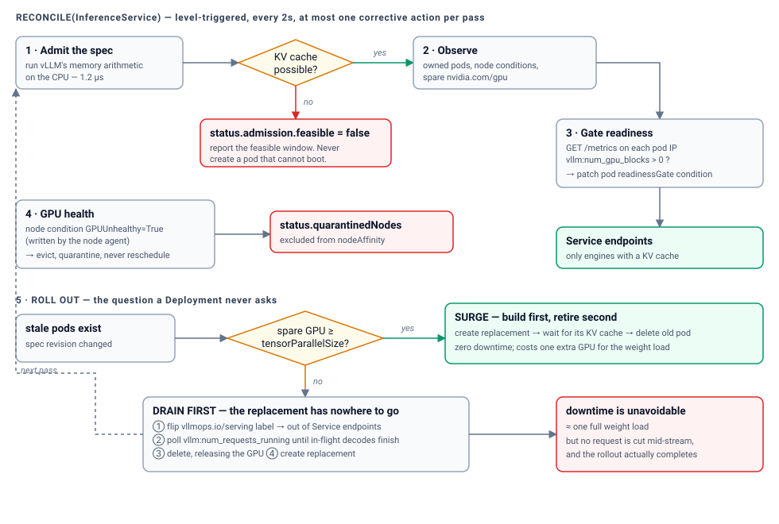
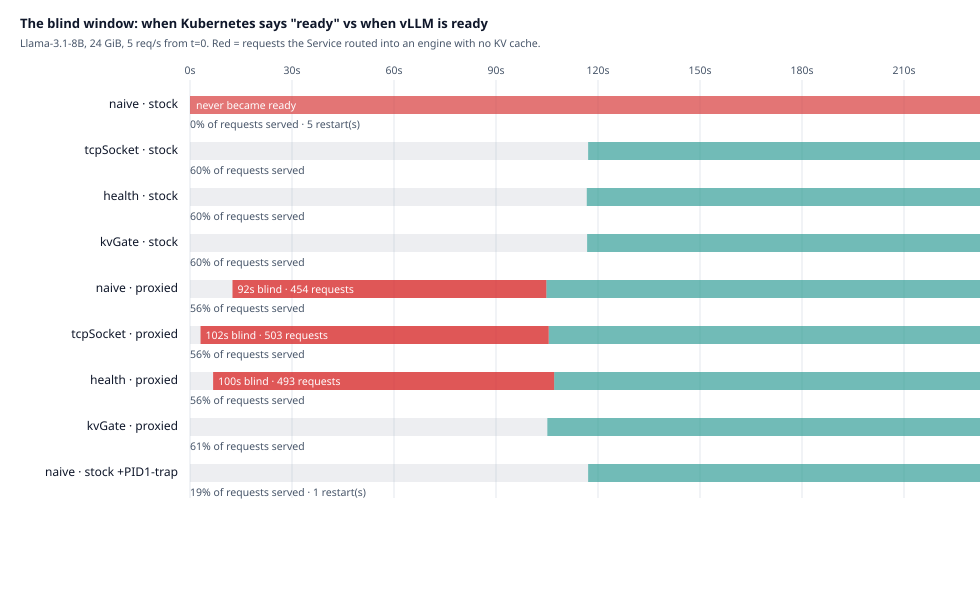
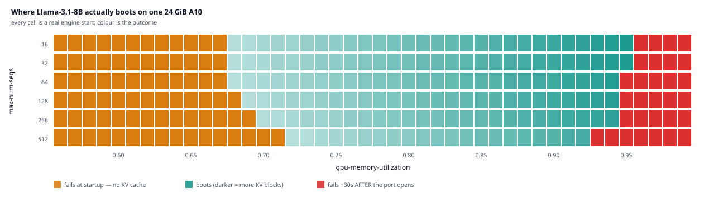

A job I wanted asked for two things I did not have on paper: Kubernetes operator experience, and experience debugging hardware. So I built the thing instead of reading about it. A small operator for vLLM. You give it a model, a tensor parallel size and a slice of GPU memory, and it turns that into serving pods that actually work.
The happy path took an afternoon. The other three weeks went into the parts nobody blogs about, which is of course where all the fun was.
I do not own a GPU. The Kubernetes half of this is completely real: a real three node cluster, the real scheduler, real kubelet probes, a real operator process. The engine is a simulator that copies vLLM's startup phases and its memory math. So the control loop behaviour is real and the speed numbers do not exist. I have not quoted a single tokens per second figure anywhere, on purpose.

01Kubernetes kills healthy pods, and it thinks it is helping
Here is the fact that breaks everything. vLLM loads the model weights, then builds its KV cache, and only then can it answer a request. For an 8B model that is about 115 seconds of doing nothing useful.
Kubernetes, out of the box, gives a pod 30 seconds to prove it is alive. So the kubelet waits 30 seconds, decides the pod is sick, and kills it. The pod restarts. It gets killed again. You get CrashLoopBackOff forever, on a pod whose only crime was being asked to load a big model.
Then there is the opposite problem, and it is worse because it is quiet. Run vLLM behind a proxy and the port answers immediately, long before the engine is ready. Kubernetes checks the port, sees an answer, and starts routing real traffic to a pod that has no memory to serve it with.
So the probe can be too strict or too loose, and both are bad, and they pull in opposite directions.

The fix that works is boring and I like it a lot. A startup probe with a generous budget absorbs the weight load, because Kubernetes promises not to arm the liveness probe until startup succeeds. Then the operator, not the kubelet, casts the final vote through a pod readiness gate. The operator checks the pod's own metrics for a KV cache, and only then lets it into the Service.
The kubelet knows if a process is running. It cannot know if a language model has memory to think with. So do not ask it.
02Two things I got wrong (both funnier than the fix)
The port was open the entire time
My first results made no sense. A TCP check was passing instantly in a setup where the port was supposed to be shut. Turns out Python's ThreadingHTTPServer opens and starts listening the moment you build it. I was only delaying the part that answers. So the socket was politely accepting connections into a queue for two minutes while nobody was home.
My simulator bug is also a real deployment bug, which is the best kind of bug. A TCP check against a socket that listens but never answers passes happily. That is one more reason a port check is the wrong question for this workload.
The pod that refused to die
One arm of the test was supposed to crash loop. It did not. The pod was killed at about 32 seconds and stayed alive until about 152. In between it finished loading, served traffic for thirty seconds, and then vanished in the middle of a request.
The reason is a very old Linux rule. Process number 1 gets no default signal handling. So a Python process running as PID 1 with no SIGTERM handler simply ignores the polite request to shut down, and every kill has to wait out the full grace period. With a handler it stops in one second. Without one it takes the entire timeout.
This bites vLLM harder than most things, because vLLM wants a long grace period so it can finish the requests it is already answering. The better you make the good case, the longer a doomed pod hangs around.
03The rollout that can never finish
A normal Kubernetes rolling update assumes pods are cheap and swappable. Start the new one, then stop the old one. A vLLM pod is neither cheap nor swappable. It takes minutes to become useful, and it is holding the GPU that its own replacement needs.
With one GPU, the new pod waits for a device the old pod will not release until the new pod is ready. Nothing crashes. The rollout just sits there, forever, which is a much more annoying failure than a crash.
So the operator looks at the real free capacity and picks. If a GPU is free it builds the new pod first and retires the old one after, and nobody notices. If nothing is free it drains first: pull the pod out of rotation, wait for the requests in flight to finish, then delete it and build the replacement. That still has downtime. Nothing can remove it. But the rollout finishes and no request gets cut in half.
I shipped a bug here and then found it myself, which felt great for about four seconds. My first idea of "a free GPU" was capacity minus what is used. That is the obvious definition and it is wrong. A node can look Ready and still refuse the pod because it is cordoned, or unreachable, or carrying a taint. Counting those as free made the operator confidently pick the strategy that deadlocks, which is exactly the failure it exists to prevent.
04Kubernetes has no idea your GPU is broken
This is the part I most wanted to answer, and the answer is a little bleak. The device plugin reports one GPU because the device shows up on the bus, not because it works. A card can be throwing uncorrectable memory errors and Kubernetes will keep cheerfully scheduling pods onto it, and those pods will keep dying, and nothing anywhere in the API will say why.
So a small agent reads the kernel log for NVIDIA Xid errors and turns the serious ones into a node condition and a taint. The operator sees that, moves its pods, and stops using the node.
The interesting bit is not the plumbing, it is the judgement. Xid 13 and Xid 31 are the most common errors you will see, and they usually mean the workload did something silly, not that the card is dying. An agent that panics on every error would drain healthy machines because one user sent a bad request. Being too relaxed costs you one pod restart. Being too aggressive costs you a whole node. So anything it does not recognise, it leaves alone and says so out loud.
05The part I did not plan, and my favourite one
Everything vLLM figures out during startup, whether the KV cache will fit, is just arithmetic. Model shape, memory fraction, sequence limits. None of it needs a GPU. So the operator does the same math up front and refuses to create a pod it can prove will fail.
Same verdict, roughly one hundred million times faster, and you get it as a message instead of a crash loop.
It also showed me something I did not expect. There is a window of memory settings that boots. Too low and there is nothing left for the cache. Too high and there is nothing left for the graph capture at the end. And raising your batch limit squeezes that window from both sides at once.

The top edge is the mean one, because it fails late. After the weights load. After the port opens. After a naive probe has already told everyone the pod is fine. So the operator now just tells you the range that works.
- 115s vs 30s
- time an 8B model needs to load, against the default budget Kubernetes gives it
- 1.24µs
- to predict the KV cache result, against 102.7 to 270.1 seconds for the engine to find out
- 24 / 24
- configurations where the prediction matched the engine exactly
- 1s vs the full timeout
- time to stop a pod, with and without a signal handler
Every table, every arm, the method and the raw JSON live in the README, and the post there regenerates itself from the results files. read the full write up
06What I would do next
- Calibrate the predictor on a real card. The structure is right, the constants are educated guesses.
- Give a quarantined node a way back. Right now it stays out until something clears the flag by hand.
- Warm the replacement before releasing the GPU, which should eat into the only downtime that is left.
- Handle models too big for one machine. Every decision above gets harder when a replica is a group of pods that live and die together.
- Run more than one operator without the two of them fighting.
If you want the real detail, the tables and the code are all in the repo. This was the fun version.